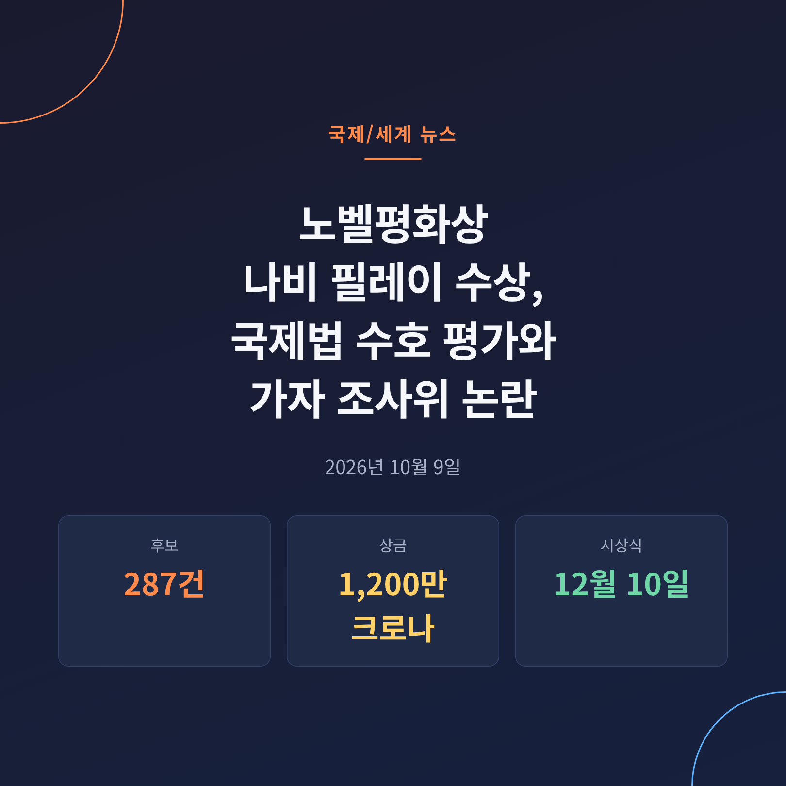
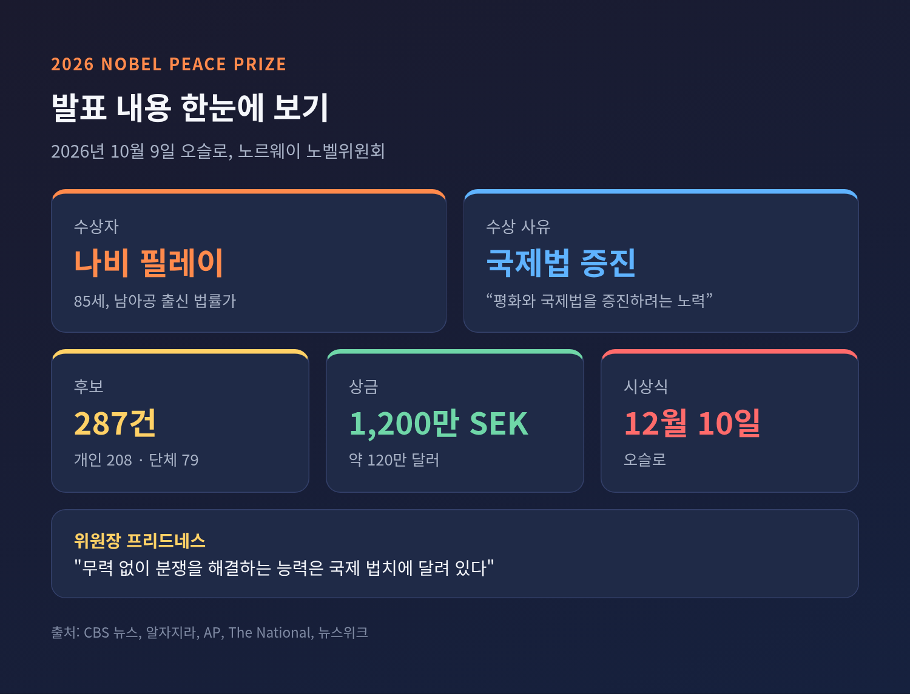
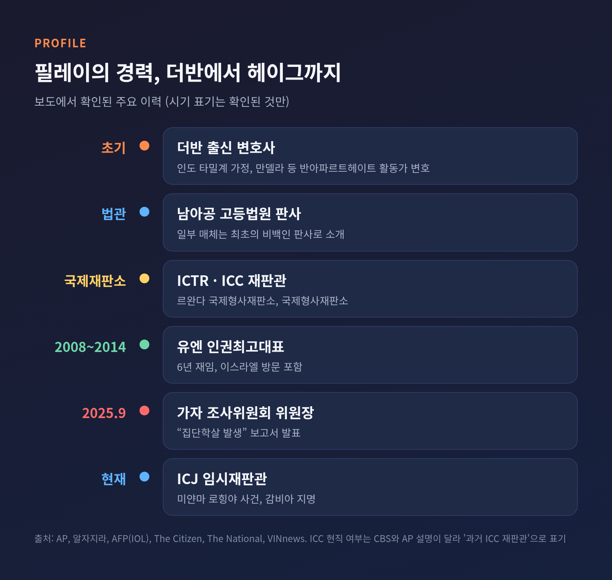
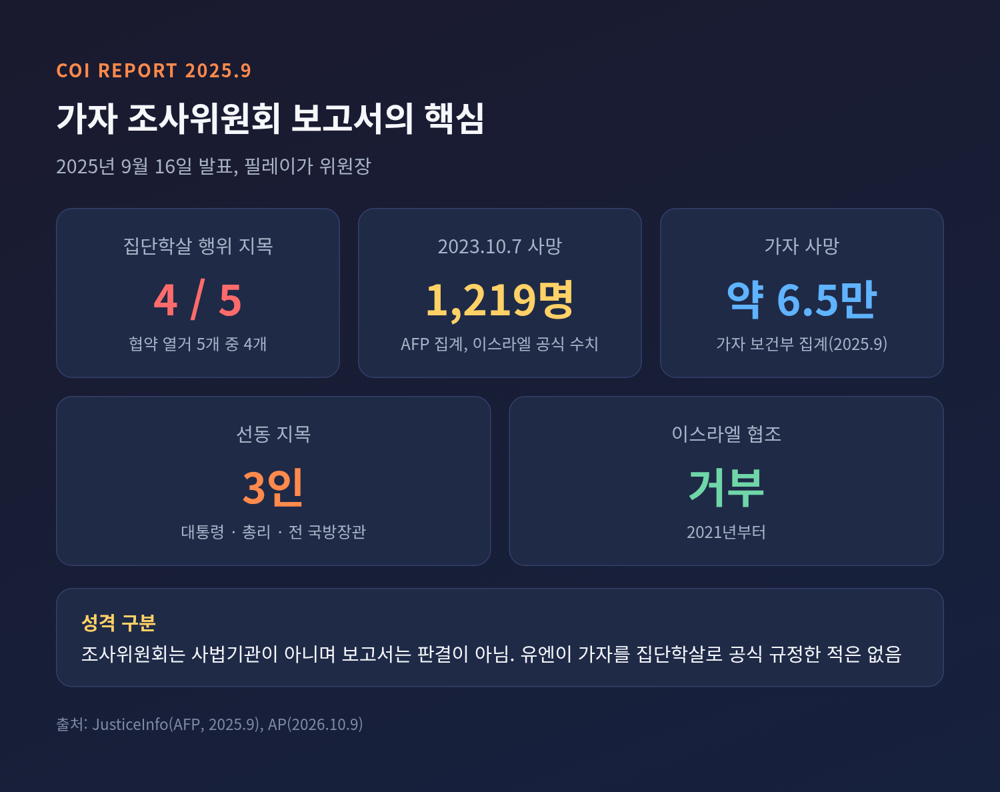
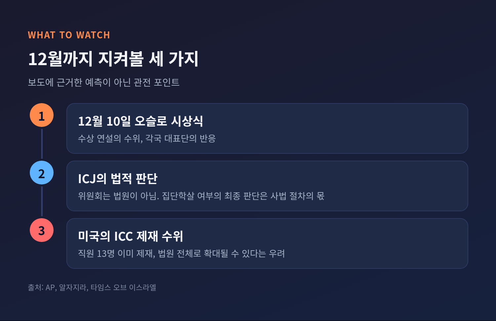

오늘은 2026년 노벨평화상 수상자로 발표된 나비 필레이를 둘러싼 내용을 정리해 보려 합니다. 노르웨이 노벨위원회는 10월 9일 오슬로에서 남아프리카공화국 출신 법률가 필레이(85)를 수상자로 발표했습니다. 위원회는 국제법 증진을 평가했고, 이스라엘 쪽에서는 그가 이끈 유엔 가자 조사위원회를 둘러싼 비판이 이어지고 있습니다.
노르웨이 노벨위원회는 현지 시각 10월 9일 금요일, 필레이를 2026년 평화상 수상자로 밝혔습니다. 수상 사유는 "평화와 국제법을 증진하려는 노력"입니다. 올해로 125주년을 맞는 평화상입니다. 후보는 모두 287건이었고, 개인 208건과 단체 79건이었습니다.
위원장 외르겐 바트네 프리드네스는 필레이를 두고 "더 평화로운 세계를 바라는 모든 이에게 희망과 영감의 원천"이라고 말했습니다. 이어 무력 없이 분쟁을 풀 수 있는 능력은 국제 법치에 달려 있고, 전쟁범죄자에게 책임을 묻는 일은 평화로운 세계의 전제조건이라고 설명했습니다.
상금은 1,200만 스웨덴 크로나(약 120만 달러)입니다. 시상식은 12월 10일 오슬로에서 열립니다.
발표 과정에는 작은 에피소드가 있었습니다. 위원회는 발표 전까지 필레이와 연락이 닿지 않았습니다. 프리드네스 위원장은 단상에서 "노르웨이 번호로 전화가 오면 꼭 받아 달라"고 당부했습니다. 필레이는 독일 뉘른베르크 포럼에 참석했다가 소식을 접했고, 청중의 기립박수 속에서 "대중이 자격이 있다고 동의하지 않는 한 상은 받고 싶지 않다"고 말했다고 AP는 전했습니다.

이번 수상의 무게는 인물보다 메시지에 실려 있습니다. 위원회는 국제법이 "평화와 안보의 보충물이 아니라 절대적 필요"라고 밝혔습니다. 국제 법률 체계가 "엄청난 압력" 아래 있고, 그 기관들이 "공격받고 있다"는 진단도 덧붙였습니다. 판사들은 "질서와 혼돈 사이의 가느다란 붉은 선"을 지키는 사람들이라고 했습니다.
이 발언은 최근 국제 사법기관이 처한 환경과 겹칩니다. AP에 따르면 미국 트럼프 행정부는 국제형사재판소(ICC) 직원 13명을 제재했습니다. 검사들과 판사 9명이 포함됩니다. 마코 루비오 국무장관은 ICC 해체 캠페인을 공언했고, 트럼프 대통령은 ICC를 "통제 불능 기관"이라 불렀습니다. 법원 전체가 제재 대상이 될 수 있다는 우려도 나옵니다.
그래서 많은 언론이 이번 수상을 국제 사법체제에 대한 공격에 보내는 신호로 읽었습니다. AP는 트럼프 대통령과 네타냐후 총리에 대한 '질책'으로 널리 해석된다고 전했습니다. 다만 위원회가 두 사람을 직접 거론한 것은 아닙니다. 프리드네스 위원장은 국제 법치를 훼손하려는 이들에게 보내는 메시지라는 취지로만 말했습니다.
트럼프 대통령은 발표 전 백악관에서 위원회가 "나 같은 사람에게는 주지 않을 수도 있다"고 말했습니다. 자신이 "8개 전쟁을 끝냈다"는 주장도 되풀이했습니다. 일부 분쟁 당사국은 그 역할을 부인한다고 뉴스위크는 덧붙였습니다. 이번 발표에 대한 백악관의 공식 반응은 확인되지 않았습니다.
필레이는 인도 타밀계 가정 출신으로, 아파르트헤이트 시절 남아공 더반에서 자랐습니다. 법조인으로 첫발을 뗀 뒤 넬슨 만델라를 비롯한 반아파르트헤이트 활동가들을 변호했습니다. 남아공 고등법원 판사를 지냈고, 최초의 비백인 판사였다고 소개하는 매체도 있습니다.
이후 경력은 국제 무대로 넓어졌습니다. 르완다 국제형사재판소(ICTR)와 국제형사재판소(ICC)에서 재판관으로 일했습니다. 2008년부터 2014년까지 6년간 유엔 인권최고대표를 맡았습니다. 지금은 국제사법재판소(ICJ)에서 미얀마 로힝야 집단학살 사건의 임시재판관으로 참여하고 있습니다. 이 사건은 감비아가 2019년 제소했고, 필레이는 감비아가 지명했습니다.
한 가지 짚어둘 부분이 있습니다. CBS 뉴스는 그를 '전 ICC 판사'로 소개한 반면, AP와 알자지라는 현직 ICJ 임시재판관이라고 설명합니다. 두 설명은 충돌하기보다 시점이 다릅니다. ICC 재판관을 지냈고 현재 ICJ 사건에 참여한다는 정리가 가장 정확해 보입니다.
위원회는 필레이가 "국가와 국가 지도자에게 책임을 물었다"고 평가했습니다. 성폭력이 반인도범죄와 집단학살 행위가 될 수 있다는 인식을 넓힌 점도 강조했다고 전해집니다. 유엔 인권사무소 대변인은 소식이 "멋지다"며 환영했습니다.

논란의 중심에는 2025년 9월 16일 발표된 보고서가 있습니다. 필레이는 당시 유엔 인권이사회가 설치한 독립국제조사위원회를 이끌고 있었습니다. 위원회는 "가자지구에서 집단학살이 발생하고 있으며 계속되고 있다"고 결론 내렸습니다.
근거는 1948년 집단학살방지협약입니다. 협약이 열거한 다섯 가지 행위 가운데 네 가지, 곧 집단 구성원 살해, 심각한 신체적·정신적 위해, 파괴를 초래할 생활조건 부과, 출생 방지 조치를 이스라엘이 저질렀다고 판단했습니다. 헤르조그 대통령, 네타냐후 총리, 갈란트 전 국방장관이 집단학살을 선동했다는 내용도 담겼습니다. 당시 AFP 집계로 2023년 10월 7일 하마스 공격의 사망자는 1,219명이었고, 가자 보건부 집계 사망자는 약 6만 5천 명이었습니다.
이스라엘의 입장은 정반대입니다. 외교부는 보고서를 "왜곡되고 허위"라고 규정하며 위원회 해체를 요구했습니다. 헤르조그 대통령은 자신의 발언이 왜곡됐고 보고서가 하마스의 잔학행위를 가렸다고 반박했습니다. 이스라엘은 2021년부터 위원회에 협조하지 않았고, 집단학살 혐의를 전면 부인합니다. 이스라엘 관리들과 일부 여성단체는 성폭력 문제를 다룬 방식을 두고 편향을 주장합니다.
반대편의 설명도 있습니다. 필레이는 반유대주의 비난과 하마스 공격을 외면했다는 지적을 모두 거부했습니다. 아파르트헤이트 투쟁에서 유대인 변호사들과 긴밀히 일했다고 AP는 소개합니다. 더 내셔널은 위원회가 10월 7일 이후 하마스와 이스라엘 양측의 전쟁범죄를 확인했다고 전했습니다.
법적 성격은 분명히 구분해야 합니다. 조사위원회는 법원이 아닙니다. 보고서는 판결이 아니며 유엔을 대표하지도 않습니다. 유엔이 가자 상황을 집단학살로 공식 규정한 적도 없습니다. 프리드네스 위원장 스스로도 AFP에 노벨위원회는 법원이 아니며, 집단학살 여부는 ICJ가 판단할 사안이라고 선을 그었습니다.
보도 시점까지 이스라엘 정부의 공식 반응은 확인되지 않았습니다. 타임스 오브 이스라엘 실시간 중계에도 정부 논평은 실리지 않았습니다. 다만 이스라엘 성향 매체의 제목은 분명했습니다. i24NEWS는 '반이스라엘 성향 법률가'라고 적었고, VINnews는 '논란의 평화상'이라고 달았습니다.
비판의 논리는 대체로 두 갈래입니다. 하나는 편향 의혹입니다. 2014년 미국 의원 100여 명이 필레이에게 서한을 보내 인권이사회가 "진지한 인권기구로 받아들여질 수 없다"고 비판한 일이 거론됩니다. 2022년 동료 위원이 '유대인 로비' 발언으로 논란을 빚었고 이후 사과한 일도 있습니다. 필레이는 당시 그 발언이 맥락에서 벗어났다고 옹호했습니다.
다른 하나는 수상이 국제기구에 대한 신뢰를 높이는지, 이스라엘이 느끼는 적대감을 키우는지에 대한 우려입니다. 반대로 지지하는 쪽은 필레이의 경력이 권력자 책임 추궁이라는 한 줄기로 이어진다고 봅니다. 두 시선은 같은 사실을 놓고 정반대 결론에 닿습니다.
팔레스타인 쪽과 남아공 정부의 공식 반응도 아직 확인되지 않습니다.

첫째, 12월 10일 시상식입니다. 필레이가 수상 연설에서 가자 문제를 어디까지 언급할지, 각국 대표단이 어떻게 반응할지가 관심을 모을 것입니다. 이는 보도에 근거한 예측이 아니라 지켜볼 대목에 가깝습니다.
둘째, ICJ의 판단입니다. 위원회는 스스로 법원이 아니라고 말했습니다. 집단학살 여부의 최종 판단이 사법 절차로 넘어가 있다는 점은 양측 모두 받아들일 수 있는 지점입니다. 판단이 나오기까지는 상당한 시간이 필요할 것입니다.
셋째, 미국의 ICC 제재 수위입니다. 이미 직원 13명이 제재를 받았고 법원 전체로 확대될 수 있다는 우려가 있습니다. 이번 수상이 그 흐름을 늦출지 자극할지는 알 수 없습니다. 확인되는 것은 노벨위원회가 이 시점에 국제 사법기관의 편에 섰다는 사실입니다.

정리하면 이렇습니다. 이번 수상은 한 인물에 대한 평가이자, 국제법을 지키려는 제도에 대한 지지 표명입니다. 동시에 한 당사국에게는 불편한 기억을 불러오는 선택이기도 합니다. 위원회는 법원이 아니라고 선을 그었고, 이스라엘은 보고서를 거부하고 있습니다.
결국 남는 질문은 하나입니다. 국제법을 지킨다는 말이 모든 당사자에게 같은 무게로 들리려면, 법원의 판단과 그 이행이 얼마나 신뢰를 얻어야 하는지입니다. 시상식이 열리는 12월까지, 그 질문은 오슬로에서 다시 이어질 것입니다.
출처: Al Jazeera, CBS News, AP(NBC Philadelphia·WTVR·The News Minute), Times of Israel, Newsweek, The National, AFP(IOL·JusticeInfo), The Citizen, VINnews, i24NEWS (2026-10-09 보도 및 2025-09-16 보도). 인용은 영문 원문을 요약·번역한 것입니다.